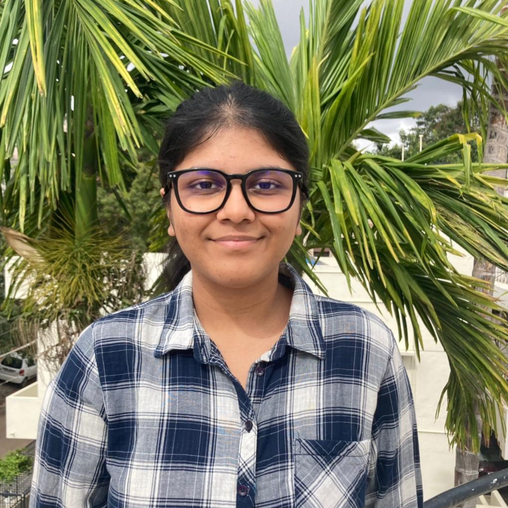

INTERNATION HEAD OF PRESS
Ananya Narayan

"We have to uphold a free press and freedom of speech because, in the end, lies and misinformation are no match for the truth"
- Barack Obama
In the International Press Corps, delegates are representing different news agencies and are allotted to different committees where their role is to observe everything that’s happening in their respective committees and write various reports about it. This is a committee where the delegates all share the common goal of observing the happenings of a specific committee rather than debating within themselves. The IPC is considered a first timer’s haven as they get to understand the procedural aspects of a committee during their observing sessions while also giving them an idea what lies in store for them in their future MUNs. Being a part of the Press enables delegates to use their voice in several ways and the infamous press conferences boosts their confidence and debating skills as they not only have to question and press a delegate for answers in front of an entire committee they also have to stay logical and composed under pressure. Edward Bulwer-Lytton once said, “The pen is mightier than the sword". So here's to the IPC, one of the mightiest committees of RNPSMUN 2021!
Discussion of the censorship of the press during times of war and conflict.
Ananya Narayan

Anirudh M
Sundidhi S